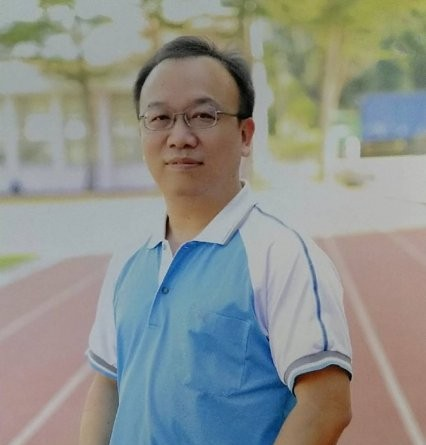

深耕教育領域多年，專長於行政業務規劃、校園資訊化推動與跨單位溝通協調。秉持「以行政支援教學，以資訊賦能校園」的理念，致力於優化校務行政流程，並透過數位工具建立高效、透明的校園管理機制。
擔任地方大型科學閱讀力或程式設計競賽之主要聯絡人與技術主辦，負責跨校學生報名系統維護、場地協調、與任務追蹤管理，確保上百名師生參賽流程順暢。
專案管理 / 系統協調重構學校入口網站架構，優化 RWD 行動版介面與無障礙網頁規範。整合各處室宣傳圖資與填報系統連結，大幅提升家長與外部訪客的瀏覽便利性。
網頁管理 / 數位宣傳規劃年度資安通報演練，導入自動化腳本優化內部重複性行政資料填報，將原本冗長的資訊稽核工作轉化為結構化流程，降低基層同仁填報負擔。
資通安全 / 行政自動化